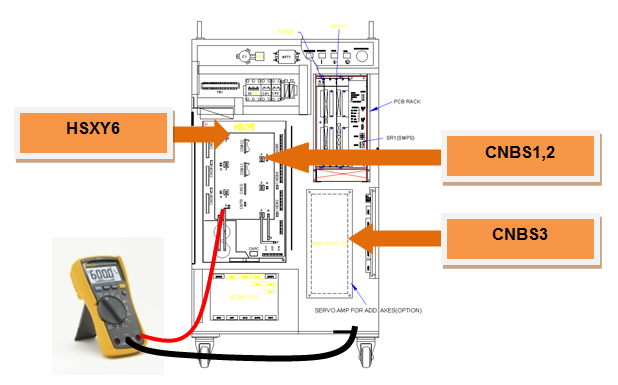
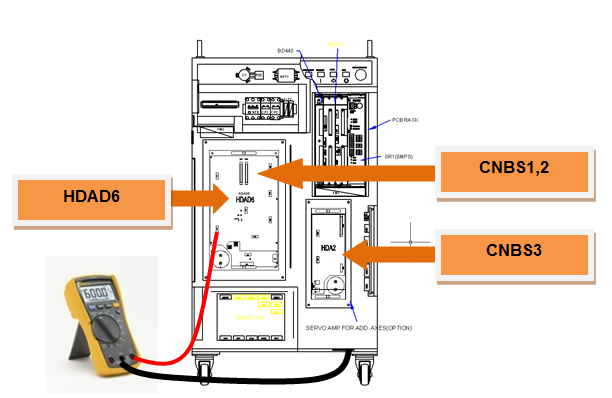
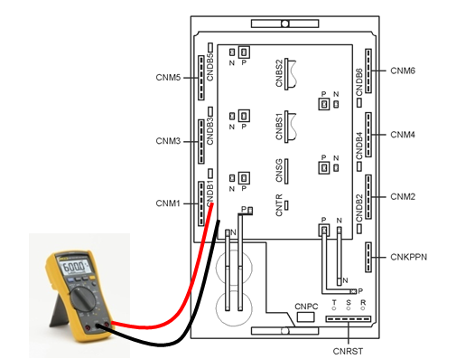
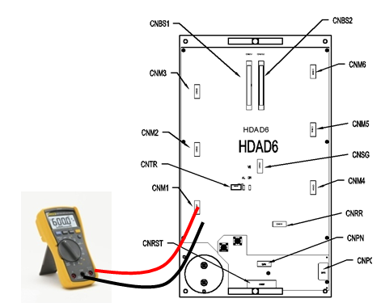

在用于使马达驱动的伺服驱动装置内的开关（Switching）元件即IPM(Intelligent Power Module)中发生了故障（Fault），或者，在小型机器人伺服驱动装置内部的保险丝被断开（断线）。造成IPM故障的原因包括散热板温度上升、IPM控制电压下降以及过电流输出等。
1. 请检查马达驱动用配件。
用于使马达驱动的伺服驱动装置通过CNBS电缆从伺服板(BD540/BD541)接收指令，内部的放大电路所输出的电流则通过连接于各轴连接器的电线传达到马达。
1) 检查连接于伺服驱动装置的输出电缆
检查从伺服驱动装置连接到马达的接线状态。请在关闭控制器电源的状态下，将连接器从伺服驱动装置中拆除后，检测电缆侧的各相与接地间电阻值并确认是否短路。

图 5.48 检查Hi4a-0000 控制器的伺服驱动装置输出电缆

图 5.49 检查Hi4a-0010/0012 控制器的伺服驱动装置输出电缆
2) 检查伺服驱动装置的开关元件（Switching Element）
伺服驱动装置的开关元件通过对从二极管模块供应的直流电压进行切换（Switching），各相输出交流电流。如果在开关元件的内部端子发生短路，就会发生过电流，从而发生IPM错误。请在拆除连接器的状态下确认伺服驱动装置的开关元件的输出端子和P或N之间是否出现短路。如果确认到短路，就需更换伺服驱动装置，同时还需检查从伺服驱动装置连接到马达的电缆。
中型机器人用伺服驱动装置: HSXY6
小型机器人用伺服驱动装置: HDAD6

图 5.50 检验HSXY6的开关元件是否短路

图 5.51 检验HDAD6的开关元件是否短路
3) 更换CNBS电缆后确认错误
用于使马达驱动的伺服驱动装置通过CNBS电缆从伺服板(BD542)接收指令，内部的放大电路所输出的电流则通过连接于各轴连接器的电线传达到马达。更换电缆后，若不发生错误，这就表示电缆的不良。请把CNBS电缆更换为正常品。
4) 更换并检查伺服板(BD540/BD541)
更换伺服板 (BD540/BD541)后，若不发生错误，这就表示伺服基板不良。请把伺服基板更换为正常品。
5) 更换并检查伺服驱动装置
更换伺服驱动装置后，若不发生错误，这就表示伺服驱动装置的不良。请把伺服驱动装置更换为正常品。
中型机器人用伺服驱动装置: HSXY6
小型机器人用伺服驱动装置: HDAD6
6) 更换并检查伺服马达
更换伺服马达后，若不发生错误，这就表示伺服马达的不良。请把伺服马达更换为正常品。
2. 请在发生错误的步骤中检查机器人。
若IPM错误在特定步骤中发生，就表示在被示教的步骤中设备配线大受损伤或因被示教的程序出现姿势变化变换而导致轴速度大幅变化。
1) 请在发生错误的位置上检查内部配线
检查连接到机器人内部马达的该轴的接线状态。检查时，应在关闭控制器电源的状态下，从伺服驱动装置中拆卸输出连接器后，检测电缆侧的各相和接地间的电阻值并确认是否短路。
2) 降低机器人的再生速度并确认错误
若在因机器人的姿势变化而引发轴速度急剧变化的步骤上发生错误，请降低再生速度后确认是否出现错误。若通过降低再生速度可消除错误，请变更该步骤的示教速度并记录作业程序。
3) 变更被示教的步骤的插值并确认错误
若将再生速度降低至75%以下也仍出现轴速度的急剧变化，请把被示教的步骤的插值变更为“P”后确认错误。如果在再生速度相同的条件下只通过修改插值就能解决错误，请修改示教。